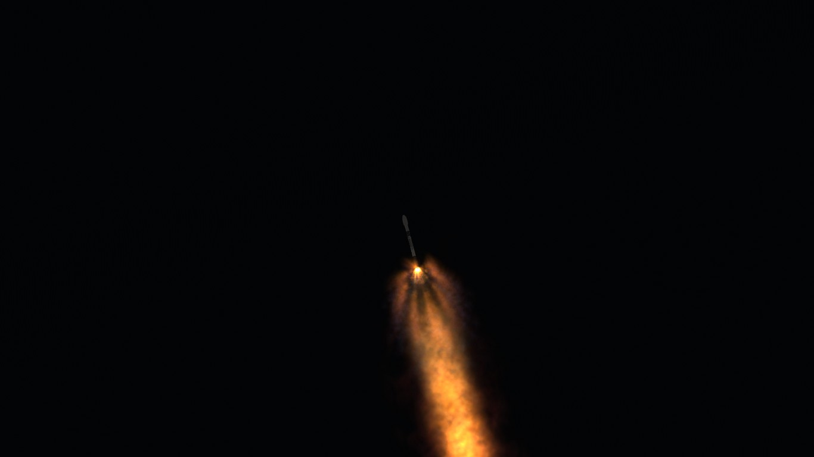
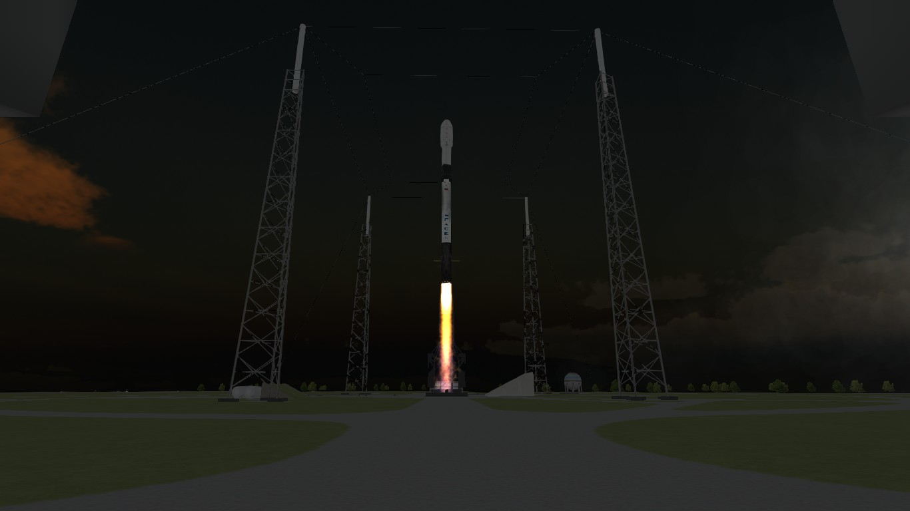
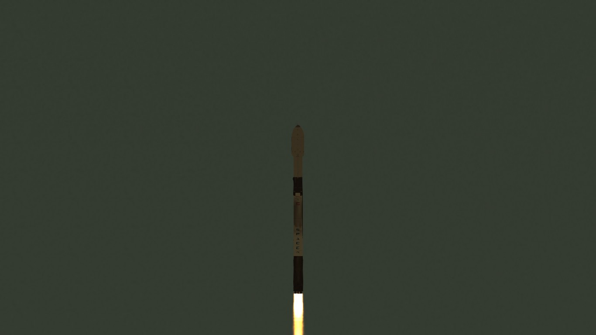
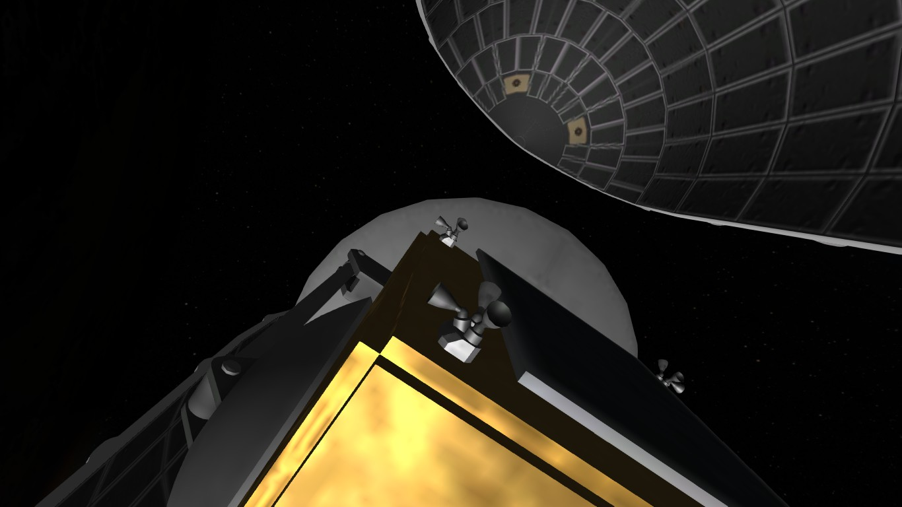
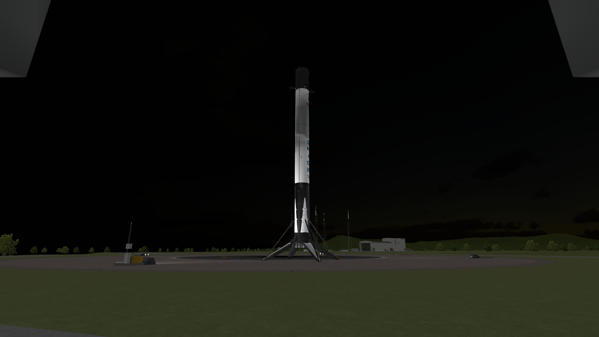
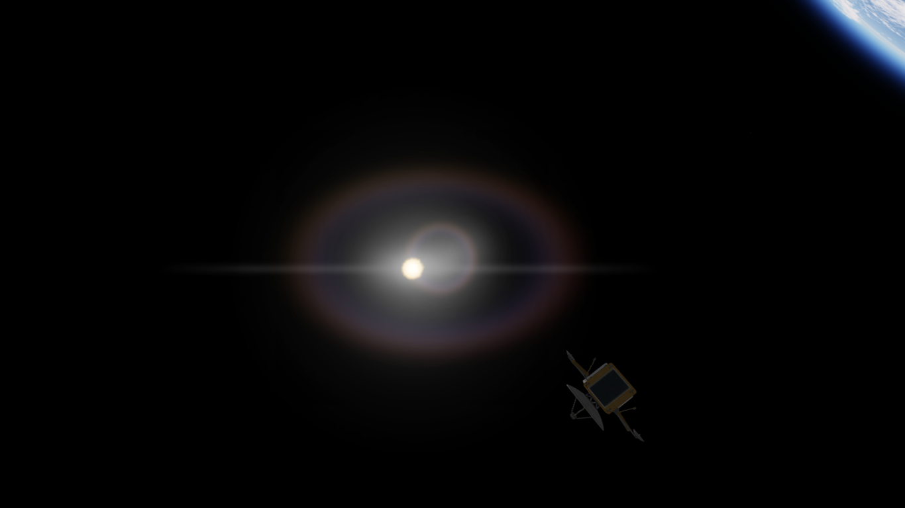

KALYPSO-3
Vehículo: Falcon 9 Block 5
Fecha: 09/05/2025
Estado: Éxito

Detalles de misión
La misión KALYPSO-3, operada por Halcon Space para el cliente Orion Dynamics. consistió en el lanzamiento exitoso de un satélite de comunicaciones experimentales a una órbita baja de 250 km con una inclinación de 30°. El despegue se llevo a cabo desde la plataforma SLC-40 del Centro Espacial Kerbin utilizando el cohete Falcon 9 Block 5 con la primera etapa B1059, que fue recuperada exitosamente mediante un aterrizaje propulsado en Landing Zone 1 (LZ-1). La misión marca un paso clave en el desarrollo de nuevas tecnologías de enlace de datos orbitales por parte de Orion Dynamics.
Detalles Técnicos
- Vehículo: Falcon 9 Block 5
- Altura del cohete: 70m
- Propulsor: B1059.1
- Carga útil: KALYPSO-3
- Órbita: 250 km
- Recuperación: Éxito sobre LZ-1
Imágenes de la misión





Constelación KALYPSO
La constelación KALYPSO es un sistema de satélites de órbita baja (LEO) desarrollado por Orion Dynamics con el objetivo de ofrecer comunicaciones de alta velocidad, baja latencia y cobertura regional optimizada.
Diseñada inicialmente como una red de demostración tecnológica, KALYPSO evolucionará en fases hacia una constelación operativa compuesta por hasta 24 satélites distribuidos en varias órbitas inclinadas.
Cada satélite KALYPSO está equipado con sistemas de transmisión en banda Ka, enlaces ópticos inter-satélite y capacidades de red inteligente para enrutar datos dinámicamente en función de la demanda.
Esta arquitectura permite conectar usuarios en zonas de difícil acceso, plataformas móviles y regiones donde la infraestructura terrestre es limitada o inexistente.
La constelación está optimizada para operaciones civiles, científicas y de seguridad, con aplicaciones que van desde monitoreo ambiental hasta comunicaciones tácticas.
Gracias a su órbita baja y cobertura segmentada, KALYPSO puede reducir significativamente el tiempo de respuesta en la transmisión de datos críticos.
KALYPSO-3, el primer satélite en ser lanzado, representa el inicio de esta red, y su desempeño en órbita permitirá validar tecnologías clave para los futuros despliegues.